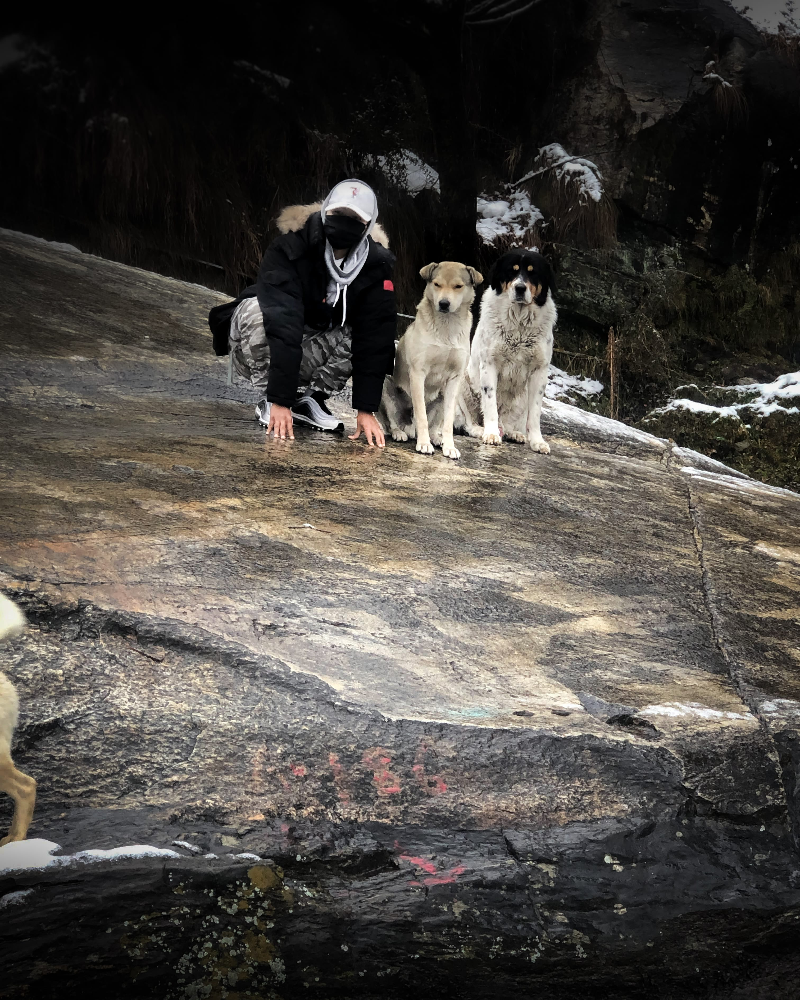
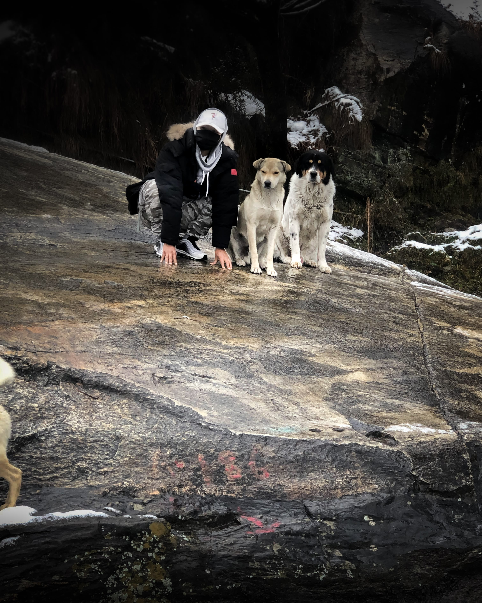

Welcome to Anil SARU'S HTML PROFILE PAGE

My name is Anil Saru. I represent as a leader of group "4 Gurkhas". Here are my following information details about my biography, hobbies, education qualification, work experiences, photos, address, etc.
| Education | HIGH SCHOOL: GURU HARKRISHAN PUBLIC SCHOOL, INDIA GATE, NEW DELHI |
|---|---|
| BACHELORS: UNIVERSITY OF DELHI, INDIA | |
| MASTERS: KYOTO COLLEGE OF GRADUATE STUDIES FOR INFORMATICS, KYOTO | |
| Hobbies | ART, FOOTBALL, SOLO ADVENTURE TRIPS AND TRAVELLING, COOKING |
| Work Experience | RESOURCE PLANNING ANALYST AT CONCENTRIX, GURGRAM, INDIA |
Anil Saru is a driven and ambitious individual hailing from Palpa district in Nepal. He embarked on an educational journey that took him from his homeland to the bustling city of New Delhi. After completing his high school education in New Delhi, Anil pursued his passion for learning further by enrolling in the University of Delhi , where he successfully completed his bachelor's degree in 2021.
Eager to apply his knowledge and gain practical experience, Anil joined Concentrix, a renowned company located in Gurugram, India, as an intern. In his role as a Resource Data Analyst, Anil showcased his analytical skills and expertise in managing data resources for the company. This experience served as a stepping stone for his future endeavors.
Recognizing the importance of acquiring a deeper understanding of data, Anil is currently pursuing a Masters in Data Science from the esteemed Kyoto College of Graduate Studies for Informatics (KCGI). Through his studies at KCGI, Anil aims to expand his knowledge and expertise in data science, mastering advanced techniques and methodologies to extract meaningful insights from complex datasets.
Anil's journey has been marked by dedication, hard work, and a thirst for knowledge. With each step he takes, he strives to broaden his horizons and contribute positively to the ever-evolving world of data analysis. His pursuit of a Masters in Data Science at KCGI demonstrates his commitment to professional growth and his determination to stay at the forefront of this exciting field. Anil is poised to make a significant impact in the realm of data analysis, leveraging his knowledge and skills to drive innovative solutions in various industries.
 


contact: Email me
Copyrigth © 2023 Reserved